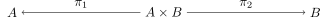
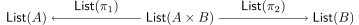

Definition 1 (functor). Given categories C and D, a functor F : C →D consists of:
a function between the object parts, F0 : C0 →D0; however, the index is often omitted and one only writes FX for F0(X).
for any two objects X,Y ∈ C0, a function FX,Y from C(X,Y ) to D(FX,FY ); again, one usually just writes Fg instead of FX,Y (g) for g ∈C(X,Y ).
such that:
Identities are preserved: for all X ∈C0, we have F(idX) = idFX
Composition is preserved: for objects X,Y,Z ∈ C0 and morphisms f ∈ C(X,Y ),g ∈ C(Y,Z), we have: F(g ∘ f) = Fg ∘ Ff. Note that the first composition is composition in C, while the second composition is composition in D.
Definition 2 (isomorphism). Given a category C and objects X,Y ∈ C0, a morphism f ∈ C(X,Y ) is an isomorphism if there is a g ∈ C(Y,X) such that g ∘ f = idX and f ∘ g = idY .
By definition, a functor between categories preserves identities and compositions. What else does it preserve?
a. Show that every functor preserves isomorphisms. This means that, if F : C →D is a functor and k ∈ C(X,Y ) is an isomorphism, then Fk ∈ D(FX,FY ) is an isomorphism.
b. Find an example of categories C and D and a functor F : C →D such that C has an initial object 0 ∈C0 and a terminal object 1 ∈C0, but such that F0 is not initial in D and F1 is not terminal in D.
c. Construct the functor List : SET → SET. Check that the functor laws are satisfied.
d. Does the functor List : SET → SET from the previous question preserve product diagrams? In more detail, the question is the following. If
|

|
is a product diagram in SET, it follows from the definition of a functor that we can define the objects and morphisms in
|

|
How exactly do List(π1) and List(π2) work? Is the above a product diagram in SET?
e. Given a set S, define the product functor (S ×_) : SET → SET.
f. Does the product functor (S ×_) of part (e) above preserve coproduct diagrams?
The goal of this exercise is to construct CAT, the “category of all categories”. The objects of CAT are categories.1 The morphisms between C and D are simply the functors from C to D. Construct the remaining structure and prove the laws required to make CAT a category. (Is there an issue? We previously said that we don’t talk about equality of objects. Do you need to do that here?)
Bonus exercise: If you already know what a natural transformation and a bicategory is, show that CAT is a bicategory.
For the definitions, please see Sunday’s exercise sheet.
a. Define a category of GRAPH directed multigraphs. Objects should be directed multigraphs. Given two such directed multigraphs (V 1,E1) and (V 2,E2), a morphisms between them should be a function f : V 1 → V 2 together with, for every a,b ∈ V 1, a function fa,b : E1(a,b) → E2(f a,f b). You thus need to define composition, identities, and check that the category laws hold.
b. Given a category, define a directed multigraph by forgetting some of the structure. Can you make a functor U : CAT → GRAPH out of this? (Note: This is an example of a so-called forgetful functor.)
c. Let G = (V,E) be a directed multigraph and D be a category. In Exercise 1 (Sunday), we have constructed a category FG. Show that the collection of functors FG →D is in bijection with the collection of pairs (p,q), where p : V → D0 is a function and q chooses, for each pair a,b ∈ V and each edge e ∈ E(a,b), a morphism in D(p(a),q(b)). Use this to construct a functor F : GRAPH → CAT.
(Note: F is a “free construction”. Such constructions occur often in category theory. What you have proved above shows that F is a left adjoint to U, written F ⊣U, which implies that U∘F is a monad – a concept that you may be familiar with from functional programming.)